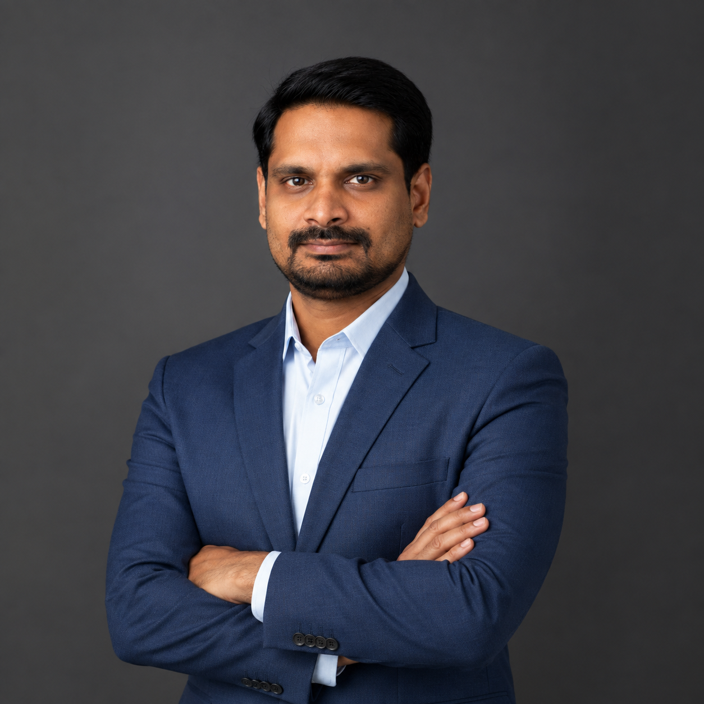

Results-driven IT Infra & Cloud Leader with 18+ years of experience delivering enterprise-scale virtualization, hybrid cloud, and datacenter transformation.
Available immediately for IT Infra Manager / Leadership roles.

Infrastructure Management across On-Prem, AWS & Azure, focusing on hybrid cloud architecture and DevOps integration.
Expertise in VCF, vSphere, ESXi, vCenter, and Software-Defined Datacenter (SDDC) components.
ITIL framework mastery: Incident, Problem, and Change management for 24x7 enterprise operations.
Streamlining operations with CI/CD automated infrastructure pipelines.
Datacenter management, Disaster Recovery planning, and ensuring business continuity at scale.
Leading cross-functional teams, vendor management, and aligning technology with business strategy.
Delivered rapid, high-impact resolution of critical infrastructure issues for global enterprise customers, minimizing business disruption and maintaining service continuity.
Built, mentored, and scaled 24×7 engineering teams, strengthening technical capabilities, operational ownership, and SLA-driven service delivery.
Led L3/L4 technical support and escalation management for complex infrastructure environments, driving faster incident resolution, root-cause analysis, and permanent corrective actions.
Modernized support processes and workflows, eliminating operational bottlenecks through automation, process standardization, knowledge management, and continuous service improvement.
Maintained 99.9%+ service availability and >98% SLA adherence across global Windows and VMware operations.
Led VMware HCX migrations of 800+ VMs to AWS & Azure with near-zero downtime via vMotion strategies.
Reduced infra costs by 25% and accelerated cloud adoption by reducing migration timelines by 40%.
Improved change success rate to 98%+ and achieved 98-100% patch compliance for 450+ hosts.
Achieved 98 to 100% patch compliance through structured monthly patching, vulnerability tracking, exception management, and KPI-driven follow-up with technical teams.
Extensive hands-on experience in designing, deploying, and managing VMware Cloud Foundation (VCF), vSphere, NSX-T, vSAN, and SDDC Manager environments across enterprise infrastructures.
Led end-to-end virtualization projects of planning, design, implementation, migration, and post-production support.
Managed and mentored a team of 12 engineers, improving incident resolution efficiency and ensuring SLA adherence across 24x7 operations.
Contract Role
• Led the end-to-end infrastructure separation program including VMware virtualization, network, and storage services with minimal business downtime.
• Handled team of 8 people on the Project delivarables, Shift Management and Project tracking
Associate Manager
Senior Specialist Engineer L3
Led infrastructure projects with 2000+ VMs and 100+ ESXi hosts.
Managed Datacenters environments with Cisco UCS across multiple Geography locations..
Server L3 Engineer
Focused on VMware lifecycle management and NetApp migration projects.
Provided L3 support and created technical documentation (RCA, SOPs).
Authored detailed RCA and SOP documentation for P1 & P2 tickets.
Infrastructure Support Engineer
Started as Level 1 and progressed to Level 2 support for global accounts including ANZ and Motorola.
Sikkim Manipal University | 2021
Karnataka State Open University | 2009
K.H.K. Institute of Engineering | 2003
Available immediatly for IT Infra Manager / Leadership roles and strategic IT consultancy.